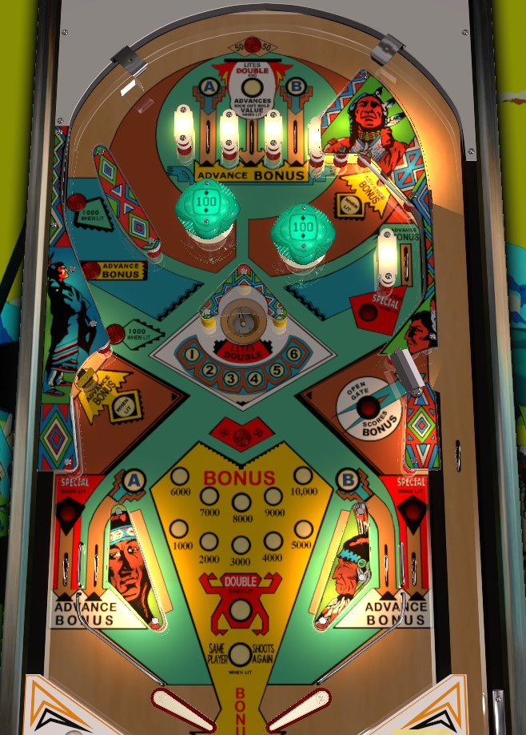

This game is included on The Pinball Primer for the purposes of education and historical completeness only. The Pinball Primer does not uphold or condone the depictions of Native Americans seen in this game's artwork, which may be considered stereotypical or offensive to some.
Collect A and B at the top lanes (off the plunge or via right orbit) or by shatzing in lanes, then shoot the left orbit to return to the top of the table until bonus is doubled (lit center top lane after collecting A-B) and maxed out at 10,000 points. Then, shoot the gate on the right side of the game to return to the shooter lane, collect the entire bonus, and do it all again. The counter in front of the saucer serves only as progress toward extra balls and specials, and the saucer itself should always be avoided because it is always a greater risk shot then a lit center top lane.
A can be collected from the left in lane or leftmost top lane, and B can be collected from the right in lane or rightmost top lane. All top lanes score 100 points and a bonus advance. (The rollover button above the top lane always scores 50 points.) Collecting the A lights the upper most button in the left orbit to score 1,000 points instead of 100, and lights the wall switch in the upper right to score a bonus advance alongside its usual 10 point value. Collecting the B lights the lowermost button in the left orbit for 1,000 points, and lights the lower left standup target to score a bonus advance alongside its usual 100 point value. Collecting both the A and B lights the center top lane to score the saucer value and opens the gate on the right side of the game.
Shooting through the gate on the right side of the game collects the entire bonus, including 2x multiplier if double bonus has been lit. After the bonus is collected, the base bonus will reset to 1,000; the double bonus light will turn off; and both of A and B will be relit on the playfield and must be collected again. The best strategy on Little Chief is to go back to the top of the table (usually via left orbit) until A-B have been collected and the bonus is doubled and maxed, then shoot the gate to collect, rinse, and repeat.
Collected A-B letters reset at the end of the ball. On easy settings, the upper right wall switch and lower left standup target can be always lit for the bonus advance, instead of needing to collect the A and B respectively to light them first.
The saucer scores 500 points and increments the counter in front of the saucer by one step. If A and B have both been collected, the center top lane scores the same value as the saucer- 500 points and increase the counter. Notice that the ball can fall into the saucer from above; the three posts that form a triangle do not have a wall between any two corners.
Exact rules surrounding the saucer can be set to easy, medium, or hard settings. Advancing the saucer counter to 3 (easy), 4 (medium), or 5 (hard) lights the out lanes alternately for Special, which can only be worth an extra ball if it is enabled. Lit out lanes alternate on 10 point switch hits. Advancing the saucer counter to 4 (easy), 5 (medium), or 6 (hard) lights the upper right side lane for an Extra Special, which can be set to be worth a free game or an extra ball if it is enabled.
The saucer counter resets when the ball drains.
Little Chief has a conventional in/out lane setup. All lanes score 100 points and advance the bonus. The left and right in lanes award A and B respectively; the left and right out lanes can be lit alternately for Special (which is always an extra ball) by advancing the saucer counter to 4, 5, or 6.
Bonus can be advanced by any top lane, any in/out lane, the center button in the left orbit, the upper right side lane, and (when lit only) the upper right wall switch and lower left standup target. Max base bonus is 10,000 points.
Bonus is doubled by making a saucer shot, or collecting an equivalent saucer value from the lit center top lane after collecting A and B. Max bonus is 2x 10,000 = 20,000 points. Double bonus is not given for free on any ball. All base bonus and multiplier are reset between balls.
Shooting through the gate on the right edge of the game after collecting A and B serves as a mid-ball bonus collect. Collecting the bonus mid-ball in this way will reset the base bonus to 1,000 points, disable the 2x multiplier if it was collected, and also reset the collection of A and B- effectively serving as an extra ball.